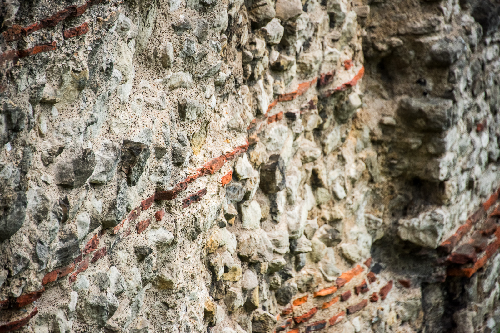
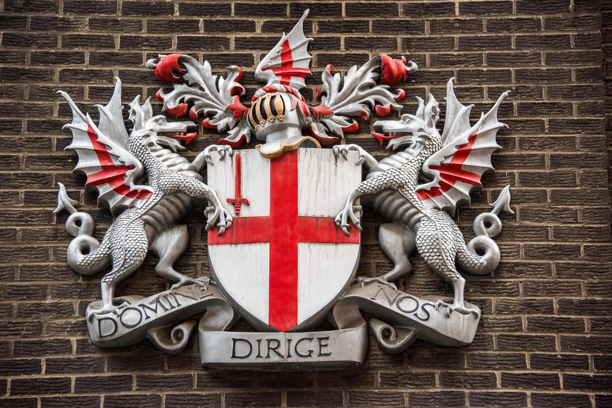
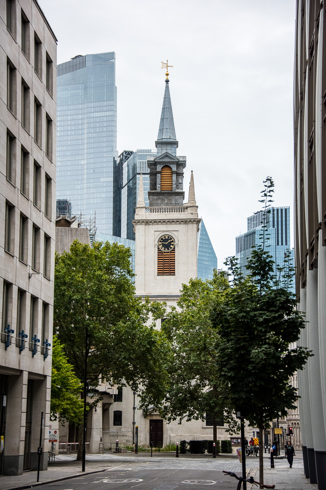

Londinium:
A Fifth of London's History is Roman
The guide is a City of London qualified guide — the certification requires a year-long intensive course, with around 110 applicants competing for 26 places. She begins by establishing the scale of what is under the streets: Roman London is approximately seven metres below current ground level. The city that existed from 47 CE to 410 CE — 400 years, a fifth of London's entire history — is not ruins scattered between modern buildings. It is a continuous buried city, occasionally revealed when something is built or bombed, generally hidden, always there.
London stayed within the Roman walls for about 1,500 years after the Romans left. During that time it was continuously occupied, continuously rebuilt, continuously raising its own ground level. Buildings were knocked down and their stone reused, or they were adapted. Debris accumulated. Centuries of rubble, refuse, building material and the general accumulation of urban life raised the street level metre by metre. The city that Boudicca burned in 60 CE is at the bottom. The City you walk through today is the top of that stack.
Most of Roman London was unknown until the Second World War. The wall was documented; the gates were known. But the forums, the temples, the basilica, the governor's palace, the amphitheatre — all hidden, until the Blitz blew holes in the ground deep enough to reach them. The discovery of London's Roman past is in large part a story of aerial bombardment.
The Roman Wall:
Kentish Ragstone & the Telltale Tiles
The best surviving section of Roman wall in the city is near the Tower of London. The Romans built their walls from Kentish ragstone — a hard, grey-green sandstone brought up the Thames from quarries in Kent. Their construction method: build two parallel skins of stone, fill the gap between with rubble, and then insert horizontal courses of terracotta tile every metre or so to level the rubble and provide structural stability. The effect is like a spirit level built into the wall every few feet.
When you see rows of red tile running horizontally through a section of ancient wall in the City, you are looking at Roman construction. That is the absolute giveaway. Above the tile courses, the wall may be medieval, Tudor or later — but below them, it is Roman. The original wall was four to five metres high. In the medieval period it was raised further, and the arched firing platforms for archers that are visible in several sections are additions from the 13th and 14th centuries. The basic wall, underneath all of that, is from the late 2nd century CE.
The area within the wall was approximately one square mile — hence the City of London's enduring nickname. That square mile contained everything: the forum, the basilica, the amphitheatre, temples, the governor's complex, merchants' houses with mosaic floors, the waterfront warehouses. For 1,500 years after the Romans left, London barely moved outside it.
Boudicca, the Laundry Basket
& the Layer of Black Ash
The first Londinium was built quickly — a frontier town of wood and mud and clay, laid out on a simple grid, before the wall was constructed and before the city had the resources to build in stone. It was not particularly well defended. In 60 CE, this proved catastrophic.
Boudicca, queen of the Iceni tribe of East Anglia, raised an army after the Romans seized her land following her husband's death and attacked her and her daughters. She marched on Londinium. The governor of the city, calculating that he was outnumbered, evacuated — taking anyone who could and would go with him. Anyone who couldn't leave, or chose to stay, was slaughtered when Boudicca arrived.
She burned the city. When archaeologists dig down through the layers of the City today, they find a reddish-black layer of fired earth and ash approximately half a metre thick — the physical trace of Londinium burning in 60 CE. It is one of the most consistent stratigraphic markers in the entire area. Wherever new construction goes deep enough, it appears. Below it: the first city. Above it: the rebuilt city that the Romans constructed after the fire, more deliberately, more ambitiously, more permanently.
After Boudicca, Roman policy in Britannia shifted. Rather than impose control by force, the governor began encouraging the British population to participate in Roman urban life — to use the baths, attend the forum, enjoy the entertainments, benefit from trade. Tacitus writes about this period: suddenly people were wearing togas, using the Roman baths, coming to the forum. The policy worked. Londinium grew rapidly after 60 CE, eventually becoming the most important administrative centre in Britannia, probably the largest city north of the Alps.
The Gates of London
& What Lived Outside the Walls
The three-kilometre Roman wall had five original gates: Aldgate, Bishopsgate, Newgate, Ludgate and Cripplegate. Moorgate was added much later, in 1415. Each gate was a controlled point of entry, heavily secured at night. Outside the wall was a different world — the world of the dead, the rubbish, the industrial, the dangerous.
Roman cities, by law, buried their dead outside the settlement boundary. The road leaving through each gate would be lined with tombs — the Via Appia model, scaled to the size of Londinium. The ditches outside the wall served as both defensive features and rubbish dumps. The road north of Moorgate area is called Houndsditch to this day: archaeologists have recovered the skeletons of dogs that were thrown over the wall when they died in the city, disposed of in the external ditch.
The church of Saint Botolph — the patron saint of travellers — stood at each city gate in the Middle Ages. The logic was practical: you are about to leave London, or you have just arrived, and you need a saint's blessing for the journey ahead. Saint Botolph without Aldersgate, Saint Botolph without Bishopsgate. The churches are still there.
Watling Street, Ermine Street
& the A2 You Drive Today
Six major roads radiated from Londinium. The Romans are famous for their straight roads, and these were no exception — paved, cambered for drainage, maintained by the imperial road system. What is remarkable is how many of them are still in use, two thousand years later, as the structural arteries of the national road network.
Watling Street ran from the Kent coast through London to Staffordshire and beyond — it is now, roughly, the A2 from Dover to London and the A5 from London to the Midlands. Ermine Street ran north to Lincoln and York — now the A1. The road east to Colchester, the first capital of Roman Britannia — now the A12. The road system that radiates from the City of London today is substantially the road system that the Romans laid out in the 1st and 2nd centuries CE. Two thousand years of subsequent engineering has mostly reinforced rather than replaced it.
The Basilica:
Bigger Than St Paul's
Leadenhall Market stands on the site of the forum and basilica of Londinium — the civic and commercial heart of the Roman city. The forum was an open space approximately 167 metres square: market stalls, public meetings, political assemblies. The basilica behind it was the town hall and law courts, 167 metres long. It was probably the largest basilica north of Rome, and longer than the current St Paul's Cathedral. Londinium ran on this building for over two centuries.

Londinium was governed not by imperial appointment alone but by a local council on the Roman model: two senior magistrates, two junior magistrates, and approximately 100 elected councillors. They managed taxation, education, road maintenance, temple upkeep — the full range of local authority functions. This model — council-based urban governance with elected representatives — is a Roman invention, and the Council of the City of London that meets in Guildhall today is, in structural terms, a direct descendant.
A small section of the basilica has been discovered beneath a building near Leadenhall Market. It cannot currently be visited, but there are hopes of providing access. New construction in the City finds Roman remains with some regularity — a new building going up around the corner from Leadenhall has revealed another fragment.
The Sacred River
& the Floating Bloomberg Building
The river Walbrook ran between the two gravel hills on which Londinium was built — Cornhill and Ludgate Hill — flowing south to the Thames. It was a freshwater source, a sacred river in Roman religious practice, and the location of numerous temples. It has been underground since the medieval period, buried by centuries of urban accumulation, and the road called Walbrook follows its course. On rainy days, a sculpture by Christina Iglesias installed in the street causes the river to appear to resurface — water gurgles up through a metal grate, briefly visible before draining away.
The Temple of Mithras was discovered in the 1950s on the bank of the buried Walbrook — a sensation at the time, with crowds queuing to see it. It was moved to allow construction of a new building. When Bloomberg's European headquarters was constructed on the site in 2017, the temple was reinstated seven feet below ground, very close to its original position, and opened to the public free of charge.
The Bloomberg Building itself is an example of a structure shaped by Roman remains beneath it: the building could not use deep foundations in the conventional way, so it sits on a different structural system — visible on the exterior as large diagonal X-braces at first floor level, the building effectively floating above the archaeology below. The same engineering challenge — building above Roman remains without destroying them — recurs across the City. Cannon Street Station is similarly constrained, sitting above what is now thought to be a large Roman temple complex.
The Amphitheatre Under Guildhall:
Discovered in 1988, Seating 6,000
Historians knew for decades that Londinium must have had an amphitheatre — every significant Roman city did. Nobody knew where it was. The City of London was too continuously built-up for the usual methods of detection, and without a gap in the urban fabric large enough to excavate, the search stalled. Then, in 1988, a planned new building for the Guildhall Art Gallery required foundation work — and the foundations hit the amphitheatre. The location of Londinium's amphitheatre had been unknown for over a thousand years, and was only discovered because a gallery needed a basement.

The amphitheatre seated approximately 6,000 people — at the time, roughly a third of Londinium's population. The black line set into the paving of Guildhall Yard traces the outer edge of the arena. Everything within it was the performance space; the raked seating rose around it.
The morning programme typically featured animal hunts — bears, bulls, and in a city this size with access to North African animals through the trade networks, occasionally lions or leopards. Condemned prisoners and slaves were also put into the arena. Gladiatorial combat — two trained fighters in a formal bout — was expensive and reserved for special occasions, given the investment in training that a gladiator represented.
The remains are accessible in the basement of the Guildhall Art Gallery, free of charge, every day except Monday. The gallery above holds around 4,000 works, 250 on display, including an outstanding Victorian collection. The art gallery is itself worth visiting as a reason to go downstairs and see the amphitheatre.